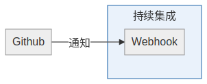

Gitlab的持续集成
Created at <2019-12-07 六>
Gitlab持续集成采用订阅模式，这和Github的通知机制不同。
Github通知机制
Github的持续集成采用通知机制。
如下图所示：
graph LR
github[Github]
webhook[Webhook]
github --通知--> webhook
subgraph 持续集成
webhook
end

持续集成的开发人员需要实现一个Webhook来接收Github的消息通知。这个 Webhook是一个服务，需要保证安全，保证可调用。
Gitlab不是这么做的。
Gitlab订阅模式
Gitlab用订阅的模式来做持续集成。如下图示：
graph LR
gitlab[Gitlab]
runner[Gitlab Runner]
runner -.订阅.-> gitlab
subgraph 持续集成
runner
end

这样 gitlab runner 可以是跑在内网的某台机器，只要该机器通过http协
议能访问gitlab就可以。这种方式对持续集成的开发人员成本较低。但对Gitlab
服务方，成本较高。Gitlab能支持多少个Runner挂在上面呢？
Gitlab Runner如何工作
Gitlab Runner 每3秒访问一下Gitlab看有没有任务，如有任务，扯下来执行。
如无任务，3秒后见。
Gitlab Runner 后面可以跑docker， kubernetes等。我觉得通过 Gitlab Runner 的shell模式可以跑lxd 。